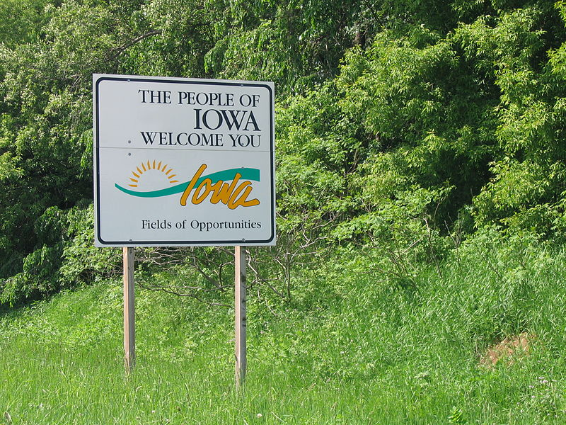

Welcome to Iowa!
Also known as the hawkeye state, and home to the fields of opportunities. Here in Iowa you’ll not only find a rich history, but a promising future as well. Come visit our fast growing urban areas, or our beautiful rural countryside. Iowa offers a perfect blend of culture, stability, nature, and community.

(5)
Explore Us On Google Earth
How Iowa Compares to the U.S.
| Iowa | U.S. | |
|---|---|---|
| Population | 3.2 Million (2023) | 335 Million (2023) |
| Median Household Income | $70,571 (2022) | $75,149 (2022) |
| Median Gross Rent | $914 (2018-2022) | $1,268 (2018-2022) |
| Persons In Poverty | 11.0% | 11.5% |
| Median Age | 38.4 (2022) | 38.5 (2022) |